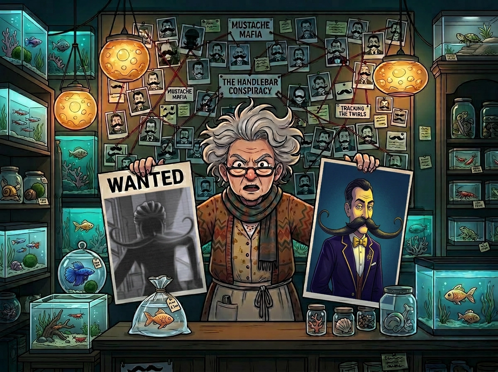
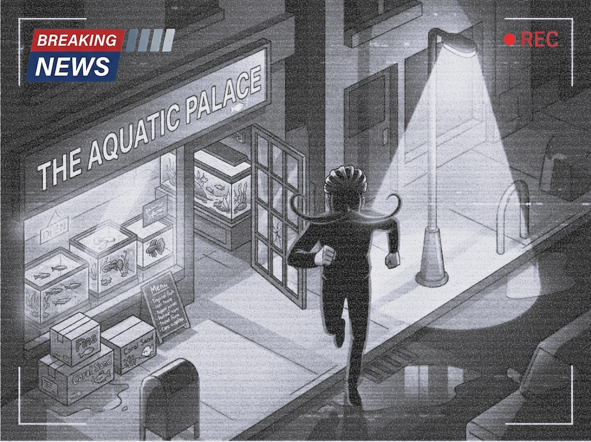
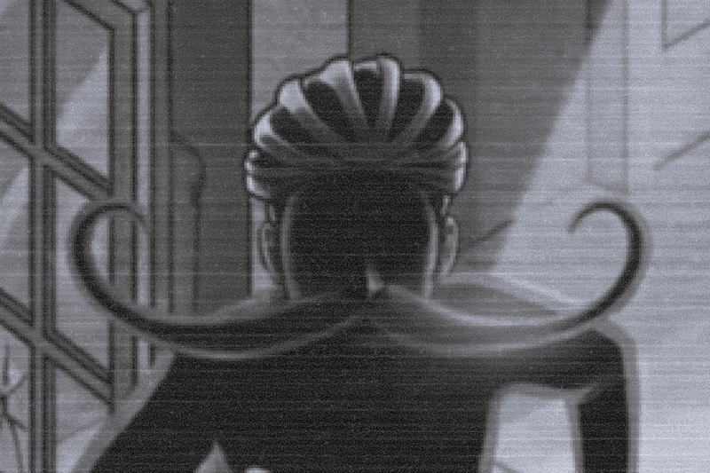
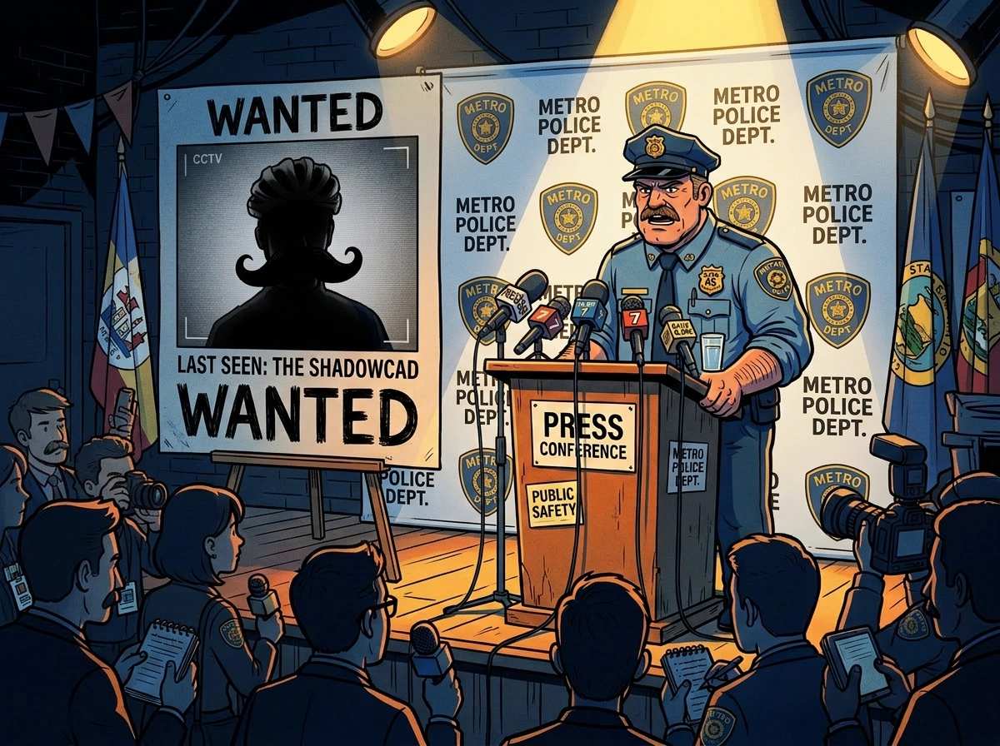
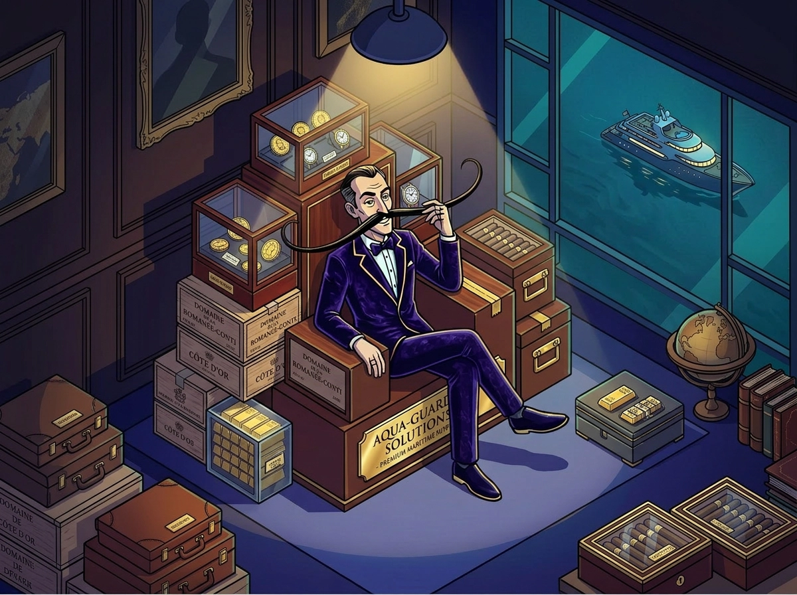
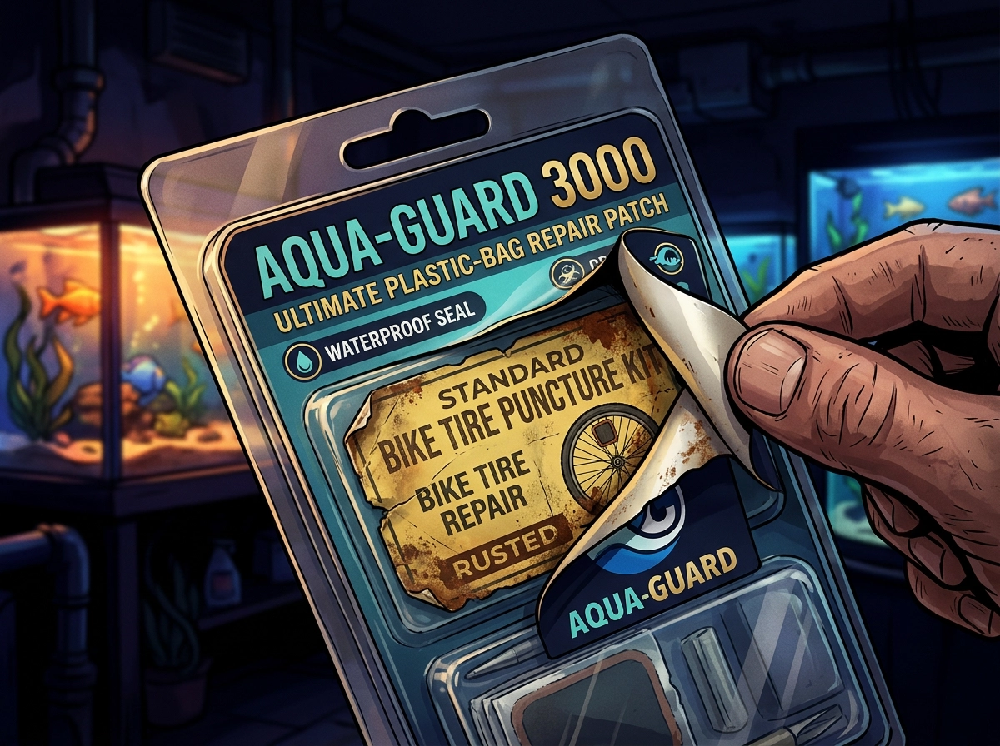
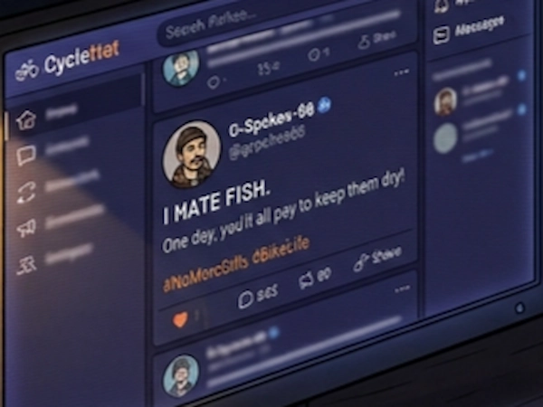

PUNCTURE PHANTOM Caught on Camera! Have you seen this mysterious figure? Authorities are
requesting the public's assistance in identifying the individual.
The King of the Patch
Gary 'Spokes' McGhee
The Rise of the Bag-Patch King: After decades of fixing punctures in the rain, former
mechanic Gary 'Spokes' McGhee has traded his wrench for a yacht. His secret? The..
The Madwoman of Main Street

Mrs. Finnegan in her store
Aquatic Pet-Shop Owner Claims 'Conspiracy': Local resident and shop owner Mrs. Finnegan
has come forward to share her theory about the strange bag punctures happening in the city..
Police Release Chilling CCTV of 'Bag-Slasher'

CCTV from the scene
METROPOLIS SOUTH — The local precinct has officially labeled it the "Mystery of the
Century," despite the fact that the perpetrator is sporting facial hair recognizable from a low-orbit
satellite. Authorities are currently appealing to the public for help in identifying a serial vandal who has
plunged the local aquatic community into a state of "liquid terror."
For the past three weeks, pet shops across the tri-state area have reported a series of bizarre break-ins.
The "Puncture Phantom," as the media has dubbed him, doesn't steal cash. He doesn't touch the rare corals.
Instead, he systematically punctures the plastic transport bags used by customers to carry their new pets
home.
"It's a surgical strike," said Officer Higgins, shaking his head at a crime scene. "He enters, he pokes, he
leaves. No fingerprints. Just... holes."

CCTV close-up from the scene
CCTV footage from 'Bubbles & Beyond' shows a figure clad in aerodynamic Lycra, wielding a sharpened bicycle
spoke with the precision of a fencer. While the figure's eyes are hidden behind reflective wraparound
sunglasses, his lower face is dominated by a handlebar mustache so large it appears to have its own gravity.
LIVE UPDATES

Officer Higgins talking at pressconference
"We are looking for a male, approximately 6-foot tall, possibly a cyclist," Officer Higgins stated during a
press conference, standing directly in front of a 10-foot projection of the suspect's very distinct
mustache. "Beyond that, we have absolutely no leads. It is as if he vanishes into thin air—or perhaps thin
water."
Residents are advised to double-bag their goldfish and report any sightings of men carrying spoke-wrenches
or smelling strongly of strawberry-flavored bubblegum and industrial lubricants.
Patchwork Billionaire: How One Man Fixed a Leaky Market
Gary 'Spokes' McGhee
UPPER DOCKS — Gary McGhee, once a humble mechanic known for patching inner tubes in a
cramped garage, is now the face of a multi-million dollar empire. His product, the "Aqua-Guard 3000 Repair
Patch," has become a household staple overnight. At $49.99 for a single 1-inch square of adhesive, it is the
most expensive tape on the planet.
"I'm not a businessman," McGhee said, reclining on his custom-built yacht. "I'm a healer. I saw the
suffering of these poor, leaky bags and I knew I had to act. I have a lot of empathy. I once lost a... uh...
bicycle tire. The pain was the same."
Critics have pointed out that the "Aqua-Guard 3000" appears to be identical to the $0.50 puncture kits used
for bicycles, simply rebranded with a picture of a smiling goldfish. McGhee dismisses these claims as "petty
jealousy from people who don't understand the complex molecular bonding required for aquatic-grade plastic."
However, McGhee isn't stopping at adhesives. This week, he announced the launch of 'Fin-Sure,' the world's
first insurance firm dedicated exclusively to "spontaneous bag failure."

Gary 'Spokes' McGhee sitting upon Throne of Aqua-Guard 3000 boxes.
"Statistics show that bag punctures are up 1,400% this month alone," McGhee noted while using a gold-plated
comb on his legendary mustache. "It's a tragedy. A lucrative, heart-wrenching tragedy. People need the peace
of mind that only a monthly premium can provide."
When asked if he had seen the recent police sketches of the Puncture Phantom, McGhee chuckled. "I'm far too
busy counting my money to look at sketches of common criminals. Besides, I'm a cyclist. I know how hard it
is to get around town. That man is probably just a misunderstood enthusiast."
Conspiracy or Delusions?
Mrs. Finnegan in her store
LOCAL DISTRICT — To the residents of this town, Mrs. Beatrice Finnegan is a "local
character"—the kind of person you politely ignore while buying fish flakes. But to Mrs. Finnegan, she is the
only person standing between the truth and a massive, mustache-shaped lie.
"It's him! It's Gary!" she screamed to our reporters, brandishing a "Aqua-Guard 3000" kit. With a trembling
hand, she peeled back the premium label to reveal a "Quick-Fix Bike Patch" sticker underneath. "He's
creating the demand so he can sell the supply! It's Puncture-Capitalism!"

Picture of cheap bike-tire puncture kit, hidden underneath aqua-guard label
Mrs. Finnegan has compiled a dossier of what she calls "irrefutable evidence." This includes screenshots
from 2019 where Gary McGhee—then a struggling mechanic—posted: "If I ever see another goldfish, it'll be too
soon. One day, you'll all pay to keep them dry."

Picture of old social media post, alledegly of Gary 'Spokes' McGhee
Her most damning evidence, however, is the mustache. "Look at the curl! Look at the wax-to-hair ratio!" she
cried, pointing at the police sketch. "There is only one man in this hemisphere with a mustache that can
catch that much wind! It's Gary 'Spokes' McGhee!"
Despite the evidence, the community remains skeptical. Local resident Tom P. had this to say: "Poor Bea.
She's been under a lot of stress with all the leaking bags. I think she's just looking for a scapegoat. Gary
is a hero. He sold me a patch for fifty bucks that saved my guppy, Goldie. Why would a hero poke holes in
things? It doesn't make sense."
Psychologists suggest Mrs. Finnegan may be suffering from "Aquatic Stress Disorder." Meanwhile, Gary McGhee
has offered to buy her shop and turn it into a 'Fin-Sure' claims center. Mrs. Finnegan's response involved a
net and several buckets of aged aquarium water.